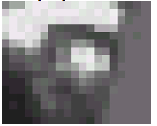
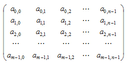
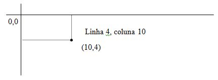

MATERIAL REALCE IMAGENS USP
Processamento Digital de Imagens
Por processamento digital de imagens entendem-se a análise e a manipulação de imagens por computador. A finalidade deste processamento é:• extrair informação da imagem
• transformar a imagem (por exemplo, aumentar contraste, realçar bordas) de tal modo que a informação seja mais facilmente discernível por um analista humano.
Na análise de imagens, a entrada do processamento é uma imagem, enquanto a saída é uma “descrição” (não-pictórica) da imagem. Este processo pode ser entendido como de redução de dados em que se diminui o volume de dados mantendo o conteúdo de informação relevante para uma dada aplicação.
Imagem
Matematicamente, pode-se definir uma imagem como função I(x,y), em uma certa região. Para a maioria das imagens, a região de definição é um subconjunto limitado do plano, e os valores assumidos pela função são números reais limitados e não-negativos. Este modelo matemático é útil, por exemplo para descrever imagens visuais, onde esta função mede, de alguma forma, a energia refletida por objetos e captada por um sistema de imageamento.Por comodidade, assume-se que a imagem é definida num retângulo [0, r] x [0, s] e os valores tomados estão contidos no intervalo [0, t].
Ao valor I(x,y) da imagem no ponto (x,y) dá-se o nome de nível de cinza.
Zebra

Uma imagem digital pode ser obtida a partir de uma imagem não-digital (“contínua”) através de um processo que envolve dois passos:
• amostragem: consiste em discretizar o domínio de definição da imgaem, ou seja, escolher os valores dx e dy da grade.
• quantização: consiste em escolher um valor múltiplo de dz para a imaem em cada ponto (m.dx, n.dy)
Portanto,
Amostragem (sampling): digitalização em termos de coordenadas espaciais
Quantização: Digitalização em termos de intensidade de cor.
Uma imagem digital pode ser representada por uma matriz de pontos com N linhas e M colunas

Obs. Uma imagem com 2 níveis de cinza é chamada de imagem binária.
Vantagem de imagens binárias:
• fáceis de serem obtidas
• ocupam menos espaço de armazenamento
• podem ser manipuladas através de operadores lógicos
Convencões:

Vizinhança:
Dado um ponto p(x,y) da imagem os “vizinhos de p (vizinhança de p)” são os pontos mais próximos de P.Vizinhança de 4 (vizinhos-4):
V4 V1 = (x-1, y)
V2 = (x+1, y)
V3 = (x, y+1)
V4 = (x, y-1)
V1 P V¬2
V3
Vizinhança de 8 (vizinhos-8):
V5 V4 V6 V5 = (x-1, y-1)
V6 = (x+1, y-1)
V7 = (x-1, y+1)
V8 = (x+1, y+1)
V1 P V¬2
V7 V3 V¬8
Distância entre P e seus vizinhos-4 = 1
Distância entre P e seus vizinhos-8 =
Manipulação de Imagens:
H Realce (enhancement) da Imagem
Acentuar as características da imagem para subseqüente análise ou mesmo
apresentação visual.
Exemplo: Delimitação de bordas, manipulação de contraste, filtragens, aguçar a
imagem.
Remover ou minimizar degradações de causas conhecidas presentes na imagem.
H Análise de ImagemPreocupa-se em efetuar medidas quantitativas em uma imagem, gerando uma descrição dela.
H Reconstruir a Imagem a partir de projeçõesÉ uma classe especial do problema de restauração, onde um objeto 2D (ou
dimensões maiores) é reconstruído a partir de várias projeções 1D
Redução do número de bits necessários a se armazenar ou transmitir uma
imagem, sem perda (considerável) de informação.
Indica-se para cada nível de cinza da imagem quantidade de pontos mapeados com tal
nível. Indica a probabilidade condicional p (z/objeto) de um ponto possuir um dado
nível de cinza z, sendo que este ponto pertence ao objeto.
Paradigma de abstração para imagens

A representação Matricial
O número de linhas m da matriz é chamada resolução vertical da imagem.
O número de colunas n da matriz é chamada de resolução horizontal da matriz
Resolução espacial ou geométrica ao produto mxn da resolução vertical pela resolução
horizontal.
A resolução espacial espacial estabelece a freqüência de amostragem final da imagem.
Resolução em termos absolutos – não fornece dados confiáveis
Medida mais confiável: densidade de resolução da imagem: número de pixels por
unidade linear de medida. Em geral, utiliza-se pixels por polegadas ppi (pixels per inch)
ou dpi (dots per inch).
Resolução de cor: número de bits utilizado para armazenar o vetor cor de cada imagem.
Gamute de uma imagem digital: é o conjunto das cores do espaço de cor quantizado da imagem.
Geometria do Pixel:
Considere uma Imagem digital e sua representação matricial
O reticulado define na realidade uma malha poligonal uniforme de retângulos do plano.
Pixel Geométrico: cada polígono na malha poligonal

Além da representação matricial podemos utilizar outras representações para uma
imagem discretizada espacialmente. Neste caso a geometria do pixel pode não ser
retangular. Observe a utilização de um pixel hexagonal.

Quantização
Pelo processo de quantização uma imagem com tons contínuos é convertida numa com
tons discretos. Para armazenamento ou transmissão, cada tom é representado por um
código binário.
Por que quantizar uma imagem? Existem duas motivações básicas que justificam a
importância do problema de quantizar uma imagem: exibição e compressão
• Exibição de imagens: Para exibir uma imagem em um dispositivo gráfico, o gamute
de cor da imagem não pode ser maior do que as cores disponíveis no espaço físico
de cor do equipamento.
• compressão de imagens: a quantização de uma imagem, permite uma redução do
número de bits utilizado para armazenar o seu gamute de cores. Reduzimos desse
modo o espaço necessário para o armazenamento da imagem, e diminuímos o
volume de dados no caso de transmissão da imagem através de algum canal de
comunicação.
Quantização para um espaço de 1 bit, 2 tons de cinza ou gamute com 2 cores, determina
uma partição do espaço de inicial de cores em 2 conjuntos. Em cada um dos conjuntos a
função de quantização assumes valores constantes. Isto de fato acontece.
C o conjunto de cores.
C’ o conjunto de cores quantizada
ci’ a cor quantizada
Cada partição do conjunto de C é chamada de célula de quantização
Em cada célula a função de quantização recebe um valor constante c’ chamado nível de
quantização.
Método geral de quantização
O processo de quantização de um espaço de cor consiste de duas etapas
• Determinar as células de quantização
• Determinar o nível de quantização de cada célula
A função de quantização q é então definida de forma a associar às cores de uma célula,
o nível de quantização correspondente. A função q é portanto constante em cada célula
de quantização. Uma vez conhecida a transformação de quantização q do espaço de cor,
o o processo de quantizar uma imagem se torna uma tarefa simples:
- para cada cor c do pixel na imagem original, identifica-se a célula de quantização a
que ela pertence, e substituímos a cor c pelo valor de quantização q(c), da célula.
Os diferentes métodos de quantização existentes, refletem a descrição acima, e
funcionam de três modos distintos:
• determinamos inicialmente as células de quantização, e em seguida calculamos o
nível de quantização de cada célula.
• Determinamos inicialmente os níveis de quantização, e em seguida determinamos as
cores que devem ser quantizadas para cada nível
• Determinamos de forma interdependente e simultânea as células e os níveis de
quantização.
Quantização uniforme e adaptativa
Como determinar a célula de quantização?Uma escolha natural e simples consiste em dividir o espaço de cor em células
congruentes e em cada célula, tomar o seu centro como nível de quantização associado.
Este método é chamado de quantização uniforme.
No caso de quantização escalar com L níveis, as células de quantização são intervalos
(ci-1,ci] de igual comprimento, isto é, ci-ci-1 = constante, e em cada célula o valor de
quantização é dado pela média:

Se o espaço de cor é o cubo RGB, e utilizamos quantização uniforme em cada uma das
componentes de cor, as células de quantização são cubos no espaço de cor, e em cada
cubo, o valor de quantização é dado pela cor no centro do cubo. Para o caso
bidimensional observe o exemplo abaixo: onde a figura (a) representa as células de
quantização para o caso bidimensional com geometria do pixel retangular, e figura (b)
ilustra uma outra de forma de geometria hexagonal.
Apesar de que a quantização uniforme é fácil de ser obtida, sua utilização pode não ser a
mais recomendada. Basta observar que nesse método algumas células de quantização
podem nem sequer possuir cores existentes no gamute da imagem.
Suponha que os valores de cor da imagem não estão uniformemente distribuídos e que,
portanto, certas cores contidas em uma região do espaço de cor ocorrem na imagem
com uma freqüência maior do que as outras cores. Se subdividirmos esta região em um
número maior de células de quantização, estaremos diminuindo o tamanho das células, e
portanto, haverá uma diminuição do erro de quantização dos elementos da imagem que
possuem aquelas cores. Como essas cores ocorrem em um grande números, estamos
conseqüentemente, minimizando a diferença entre a imagem original e a quantizada.
Um método de quantização que não utiliza um particionamento do espaço de cor em
células congruentes é chamado de quantização não-uniforme. A quantização uniforme é
dita adaptativa quanto a geometria da células é escolhida de acordo com características
da distribuição de cor na imagem.
Métodos adaptativos de quantização
Os métodos desta classe podem ser descritos em duas etapas:1. é feita uma estimativa das propriedades estatísticas relevantes da imagem.
2. aplica-se o método geral de quantização, particionado-se o espaço de cor com base
nos dados obtidos na fase anterior.
Portanto, devemos inicialmente construir um histograma de freqüência da imagem que
nos dá uma aproximação da distribuição de probabilidade das cores na imagem e depois
decidirmos qual método de quantização adaptativo utilizar:
Quantização por Seleção direta
O método de seleção direta escolhe, inicialmente, com base em propriedades estatísticasda imagem, os níveis de quantização a serem utilizados e a partir daí determina a função
de quantização a função de quantização de forma a minimizar o erro de quantização.
Um exemplo é o algoritmo de populosidade.
Algoritmo de populosidade. Esse método constrói inicialmente o histograma de
freqüência da imagem e, em seguida escolhe para os K níveis de quantização as K
cores que ocorrem com mais freqüência no gamute e cores (cores mais populosas).
Um problema deste método está em ignorar totalmente cores em regiões de baixa
densidade do espaço de cor (ex. um highlight em uma imagem pode desaparecer
completamente nesse processo de quantização, uma vez que ele ocupa apenas um
pequeno número de pixels na imagem).
Este algoritmo pode ser utilizado com resultados satisfatórios, para imagens que
apresentem distribuição uniforme de cor.
Teoria da Amostragem


Manipulação de Imagens:
H Realce (enhancement) da Imagem
Acentuar as características da imagem para subseqüente análise ou mesmo
apresentação visual.
Exemplo: Delimitação de bordas, manipulação de contraste, filtragens, aguçar a
imagem.
Remover ou minimizar degradações de causas conhecidas presentes na imagem.
H Análise de ImagemPreocupa-se em efetuar medidas quantitativas em uma imagem, gerando uma descrição dela.
H Reconstruir a Imagem a partir de projeçõesÉ uma classe especial do problema de restauração, onde um objeto 2D (ou
dimensões maiores) é reconstruído a partir de várias projeções 1D
Redução do número de bits necessários a se armazenar ou transmitir uma
imagem, sem perda (considerável) de informação.
Indica-se para cada nível de cinza da imagem quantidade de pontos mapeados com tal
nível. Indica a probabilidade condicional p (z/objeto) de um ponto possuir um dado
nível de cinza z, sendo que este ponto pertence ao objeto.
Paradigma de abstração para imagens
A representação Matricial
O número de linhas m da matriz é chamada resolução vertical da imagem.
O número de colunas n da matriz é chamada de resolução horizontal da matriz
Resolução espacial ou geométrica ao produto mxn da resolução vertical pela resolução
horizontal.
A resolução espacial espacial estabelece a freqüência de amostragem final da imagem.
Resolução em termos absolutos – não fornece dados confiáveis
Medida mais confiável: densidade de resolução da imagem: número de pixels por
unidade linear de medida. Em geral, utiliza-se pixels por polegadas ppi (pixels per inch)
ou dpi (dots per inch).
Resolução de cor: número de bits utilizado para armazenar o vetor cor de cada imagem.
Gamute de uma imagem digital: é o conjunto das cores do espaço de cor quantizado da imagem.
Geometria do Pixel:
Considere uma Imagem digital e sua representação matricial
O reticulado define na realidade uma malha poligonal uniforme de retângulos do plano.
Pixel Geométrico: cada polígono na malha poligonal
Além da representação matricial podemos utilizar outras representações para uma
imagem discretizada espacialmente. Neste caso a geometria do pixel pode não ser
retangular. Observe a utilização de um pixel hexagonal.
Quantização
Pelo processo de quantização uma imagem com tons contínuos é convertida numa com
tons discretos. Para armazenamento ou transmissão, cada tom é representado por um
código binário.
Por que quantizar uma imagem? Existem duas motivações básicas que justificam a
importância do problema de quantizar uma imagem: exibição e compressão
• Exibição de imagens: Para exibir uma imagem em um dispositivo gráfico, o gamute
de cor da imagem não pode ser maior do que as cores disponíveis no espaço físico
de cor do equipamento.
• compressão de imagens: a quantização de uma imagem, permite uma redução do
número de bits utilizado para armazenar o seu gamute de cores. Reduzimos desse
modo o espaço necessário para o armazenamento da imagem, e diminuímos o
volume de dados no caso de transmissão da imagem através de algum canal de
comunicação.
Quantização para um espaço de 1 bit, 2 tons de cinza ou gamute com 2 cores, determina
uma partição do espaço de inicial de cores em 2 conjuntos. Em cada um dos conjuntos a
função de quantização assumes valores constantes. Isto de fato acontece.
C o conjunto de cores.
C’ o conjunto de cores quantizada
ci’ a cor quantizada
Cada partição do conjunto de C é chamada de célula de quantização
Em cada célula a função de quantização recebe um valor constante c’ chamado nível de
quantização.
Método geral de quantização
O processo de quantização de um espaço de cor consiste de duas etapas
• Determinar as células de quantização
• Determinar o nível de quantização de cada célula
A função de quantização q é então definida de forma a associar às cores de uma célula,
o nível de quantização correspondente. A função q é portanto constante em cada célula
de quantização. Uma vez conhecida a transformação de quantização q do espaço de cor,
o o processo de quantizar uma imagem se torna uma tarefa simples:
- para cada cor c do pixel na imagem original, identifica-se a célula de quantização a
que ela pertence, e substituímos a cor c pelo valor de quantização q(c), da célula.
Os diferentes métodos de quantização existentes, refletem a descrição acima, e
funcionam de três modos distintos:
• determinamos inicialmente as células de quantização, e em seguida calculamos o
nível de quantização de cada célula.
• Determinamos inicialmente os níveis de quantização, e em seguida determinamos as
cores que devem ser quantizadas para cada nível
• Determinamos de forma interdependente e simultânea as células e os níveis de
quantização.
Quantização uniforme e adaptativa
Como determinar a célula de quantização?Uma escolha natural e simples consiste em dividir o espaço de cor em células
congruentes e em cada célula, tomar o seu centro como nível de quantização associado.
Este método é chamado de quantização uniforme.
No caso de quantização escalar com L níveis, as células de quantização são intervalos
(ci-1,ci] de igual comprimento, isto é, ci-ci-1 = constante, e em cada célula o valor de
quantização é dado pela média:
Se o espaço de cor é o cubo RGB, e utilizamos quantização uniforme em cada uma das
componentes de cor, as células de quantização são cubos no espaço de cor, e em cada
cubo, o valor de quantização é dado pela cor no centro do cubo. Para o caso
bidimensional observe o exemplo abaixo: onde a figura (a) representa as células de
quantização para o caso bidimensional com geometria do pixel retangular, e figura (b)
ilustra uma outra de forma de geometria hexagonal.
Apesar de que a quantização uniforme é fácil de ser obtida, sua utilização pode não ser a
mais recomendada. Basta observar que nesse método algumas células de quantização
podem nem sequer possuir cores existentes no gamute da imagem.
Suponha que os valores de cor da imagem não estão uniformemente distribuídos e que,
portanto, certas cores contidas em uma região do espaço de cor ocorrem na imagem
com uma freqüência maior do que as outras cores. Se subdividirmos esta região em um
número maior de células de quantização, estaremos diminuindo o tamanho das células, e
portanto, haverá uma diminuição do erro de quantização dos elementos da imagem que
possuem aquelas cores. Como essas cores ocorrem em um grande números, estamos
conseqüentemente, minimizando a diferença entre a imagem original e a quantizada.
Um método de quantização que não utiliza um particionamento do espaço de cor em
células congruentes é chamado de quantização não-uniforme. A quantização uniforme é
dita adaptativa quanto a geometria da células é escolhida de acordo com características
da distribuição de cor na imagem.
Métodos adaptativos de quantização
Os métodos desta classe podem ser descritos em duas etapas:1. é feita uma estimativa das propriedades estatísticas relevantes da imagem.
2. aplica-se o método geral de quantização, particionado-se o espaço de cor com base
nos dados obtidos na fase anterior.
Portanto, devemos inicialmente construir um histograma de freqüência da imagem que
nos dá uma aproximação da distribuição de probabilidade das cores na imagem e depois
decidirmos qual método de quantização adaptativo utilizar:
Quantização por Seleção direta
O método de seleção direta escolhe, inicialmente, com base em propriedades estatísticasda imagem, os níveis de quantização a serem utilizados e a partir daí determina a função
de quantização a função de quantização de forma a minimizar o erro de quantização.
Um exemplo é o algoritmo de populosidade.
Algoritmo de populosidade. Esse método constrói inicialmente o histograma de
freqüência da imagem e, em seguida escolhe para os K níveis de quantização as K
cores que ocorrem com mais freqüência no gamute e cores (cores mais populosas).
Um problema deste método está em ignorar totalmente cores em regiões de baixa
densidade do espaço de cor (ex. um highlight em uma imagem pode desaparecer
completamente nesse processo de quantização, uma vez que ele ocupa apenas um
pequeno número de pixels na imagem).
Este algoritmo pode ser utilizado com resultados satisfatórios, para imagens que
apresentem distribuição uniforme de cor.
Teoria da Amostragem
Cada valor f(ui) é chamado amostra do sinal
A seqüência mostrada na equação 1 é chamada de seqüência de amostras.
Amostragem Pontual Uniforme
Conceito de reticuladoCada ponto no reticulado é chamado de vértice do reticulado
A amostragem pontual é uniforme quando o conjunto de pontos ui são vértices de um
reticulado do espaço.
Número de amostras por unidade de espaço é chamado de taxa de amostragem ou
freqüência de amostragem.
Reconstrução de sinais

A equação acima define uma interpolação entre os diversos valores ci das amostras do
sinal.
(reconstrução e interpolação são nomes distintos para o mesmo problema).


Cada valor f(ui) é chamado amostra do sinal
A seqüência mostrada na equação 1 é chamada de seqüência de amostras.
Amostragem Pontual Uniforme
Conceito de reticuladoCada ponto no reticulado é chamado de vértice do reticulado
A amostragem pontual é uniforme quando o conjunto de pontos ui são vértices de um
reticulado do espaço.
Número de amostras por unidade de espaço é chamado de taxa de amostragem ou
freqüência de amostragem.
Reconstrução de sinais
A equação acima define uma interpolação entre os diversos valores ci das amostras do
sinal.
(reconstrução e interpolação são nomes distintos para o mesmo problema).